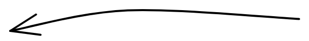

Your browser doesn't support the features required by impress.js, so you are presented with a simplified version of this presentation.
For the best experience please use the latest Chrome, Safari or Firefox browser.
Estimation of Motion Vector Fields of Complex Microstructures by Time Series of Volume Images
Tessa Nogatz RPTU Kaiserslautern-Landau, Germany
Triumphant Carbon
In 1981, Formula 1 driver John Watson lost control over his car and got involved in a major crash. His car was torn apart, it burst in flames and everyone was sure at that time, that a driver cannot survive such a severe crash
p=1 already strong limitation
needed to deduce minimizer in step 3 of direct method
needed to deduce minimizer in step 3 of direct method
We better find an object that can be measured by both parts of regularization
basically set of admissible solutions such that we find an object of interesst in there
with noisy data \(y^\delta\) such that \(||y-y^\delta||\leq \delta\)
with \( x^\delta_* \in \{x\in X \;\big| \; ||Tx-y^\delta|| \leq \delta\} \)
\begin{align}
Tx^\delta_* &= y^\delta
\end{align}
\( \pazocal{M}(y^\delta, \delta) \)
Let \(\colra{T}{X}{Y}\) have dense range, \(y\in\mathcal{R}(T)\) and \(y^\delta \in Y\) such that \(||y^\delta-y||\leq \delta\) with \(||y^\delta||>\delta\). Then, for the Tikhonov-approximation \(x_*\) and some \(\alpha_*>0\) holds \( ||Tx_*-y^\delta||=\delta \) and \( (T^*T+\alpha_*\mathbb{I})x_* = T^*y^\delta \).
1
Let \(T\) be injective with dense range in \(y\), and let \(\{\Reg_\alpha\}_{\alpha>0}\) be given by \(\Reg_\alpha = (T^*T+\alpha_*\mathbb{I})^{-1}T^*\). If \(y\in\mathcal{R}(T)\) and \(\{y^\delta\}_{\delta >0}\subset Y\) is a such that \(||y^\delta-y||\leq \delta\), and if \(\alpha = \alpha(\delta)\) is chosen such that \(\alpha(\delta)\rightarrow 0 \) and \( \delta^2/\alpha(\delta) \rightarrow 0 \) as \(\delta\rightarrow 0 \), then the approximations \(\pazocal{R}_{\alpha(\delta)}y^\delta\) converge to \(x\) as \(\delta\rightarrow 0\).
Subproblem 1 (local DVC):
Hold \( \class{substep-1-hold}{\{\hat\ub_i^k\}} \), \( \class{substep-1-hold}{\{\mathbf{W}_i^k\}} \) and \( \class{substep-1-hold}{\{\mathbf{v}_i^k\}} \) and minimize for \( \class{substep-1-minimize}{\{\mathbf{F}_i\}} \) and \( \class{substep-1-minimize}{\{\ub_i\}} \).
Subproblem 2 (global DVC):
Hold \( \class{substep-2-hold}{\{\mathbf{F}_i^{k+1}\}} \), \( \class{substep-2-hold}{\{\ub_i^{k+1}\}} \), \( \class{substep-2-hold}{\{\mathbf{W}_i^k\}} \) and \( \class{substep-2-hold}{\{\mathbf{v}_i^k\}} \) and minimize for \( \class{substep-2-minimize}{\hat\ub_i} \).
Subproblem 3 (Lagrange Multiplier update):
Update \( \class{substep-3-update}{\{\mathbf{W}_i^k\}} \) and \( \class{substep-3-update}{\{\mathbf{v}_i^k\}} \) for each \(i\).
The authors first employ a local DVC by fixing \(\{\hat\ub_i^k\}\), }(\{\mathbf{W}_i^k\}\) and \(\{\mathbf{v}_i^k\}\)
Let \(\Omega\subset\R^N\) be an open set and let \(u\in\bv(\Omega)\). Then there exists a sequence \((u_n)_{n\in\N}\) of functions in \(C^\infty \cap W^{1,1}(\Omega)\) such that \(u_n\rightarrow u\zpftext{in}L_1(\Omega)\) and \(J(u_n)=\int_\Omega |\nabla u_n|dx \rightarrow J(u) = \int_\Omega |Du| \zpftext{as} n\rightarrow\infty\).
1
Let for the sake of simplicity be \(N=M=L\) and \(h=1/M\), \(\Omega = (0,1)^3\). Let \(TV_h(\ub)\) be the discrete total variation. Then, as \(h\rightarrow 0\), \(TV_h\) \(\Gamma\)-converges to
Example (Tikhonov): \(\Reg_\alpha = (T^*T+\alpha_*\mathbb{I})^{-1}T^*\) and \(\pazocal{R}_{\alpha(\delta)}y^\delta\rightarrow T^\dagger y\) as \(\delta\rightarrow 0\)
Proposition: If \(x_*^\delta\) is the solution of \((T^*T+\alpha_*\mathbb{I})x_*^\delta = T^* y^\delta\), it is also the solution of \begin{equation} \min_x ||Tx-y^\delta|| + \alpha_*||x||^2\end{equation}
Convergence of a Regularization – Banach Spaces
Most obvious problem in Banach spaces: We lose convergence to \(T^\dagger\)
Existence:
\(J(v)\) has to admit a solution for every \(\alpha>0\) and every \(y\in Y\).
Stability:
The noisy input data \(v^\delta\) depends continuously on the solution \(u_\alpha^\delta\) to the noisy equation.
Convergence:
For \(\alpha\rightarrow 0\) and \(v^\delta\rightarrow v\), the noisy solution \(u_\alpha^\delta\) should converge to the true solution \(u\).
Idea: Instead of using means from (compact) linear operator equations, use calculus of variations to show the above conditions.
Minima of Functionals in Banach Spaces – General
To show that a functional \(J\colon u\rightarrow \R\) admits a minimum, one can use the direct method of calculus of variations. It consists of three steps:
One constructs a minimizing sequence \(v_n\in U\), i.e. a sequence satisfying \(\lim_{n\rightarrow\infty} J(v_n) = \inf_{v\in U} J(v)\).
If \(J\) is coercive, so if \(\lim_{||v||\rightarrow\infty} J(v) = +\infty\), one can obtain a uniform bound \(|v_n|_U\leq C\). If \(U\) is reflexive, we can deduce the existence of \(v_0\in U\) and of a weakly convergent subsequence \(v_{n_j}\), i.e. such that \(v_{n_j}\xrightharpoonup[U]{ }v_0\).
If the inequality \(\lim_{v_{n_j}\xrightharpoonup[U]{ }v_0} J(v_{n_j}) \geq J(v_0)\) holds, we deduce that \(v_0\) is a minimizer and that \(J(v_0) = \inf_{v\in U} J(v)\).
Exists as soon as we can show boundedness from below (boundedness, convexity)
Deduce that bounded seq has conv subsequence. Needs reflexive or separable spaces, or weak* topology (conv reg. duals)
needs lower seq. semi continuity
Minima of Functionals in Banach Spaces – Regularization
Solve \(F(v) = y\) by \(\min_v \Dist(v, y^\delta)+\alpha \Reg(v)\)
The Banach spaces \(U\) and \(Y\) are associated with topologies \(\tau_U\) and \(\tau_Y\) that are weaker than the norm topologies.
\(\Dist\) is given by \(||\cdot||_U^p\) with \(p\geq 1\).
\(||\cdot||_Y\) is sequentially lower semi-continuous with respect to \(\tau_Y\).
\(\colra{\Reg}{U}{[0, \infty]}\) is convex and sequentially lower semi-continuous with respect to \(\tau_U\).
For every \(\alpha> 0\), \(M>0\) the level sets \(\pazocal{M}_\alpha(M)\coloneqq\{v\in U \;\big|\, J(v)\leq M\}\) are sequentially pre-compact with respect to \(\tau_U\).
Then \(||F(v)-y^\delta||^p_V + \alpha \Reg(v)\)
Has a minimizer
Is stable (\(y^\delta\) depends continuously on \(u_\alpha^\delta\)
Converges (for \(\alpha\rightarrow 0\), \(y^\delta\rightarrow y\) it follows \(u_\alpha^\delta\).
Strong topology, i.e. norm topology is often too restrictive. One needs to level out: weak topology has more convergent series but lsc has to be satisfied for more functions.
strong: norm convergence
weak: convergence of (all) duals (linear maps)
weak': convergence of all functionals for a dual
p=1 already strong limitation
needed to deduce minimizer in step 3 of direct method
needed to deduce minimizer in step 3 of direct method
We better find an object that can be measured by both parts of regularization
basically set of admissible solutions such that we find an object of interesst in there
Convergence of Discrete TV
Definition: Let \((J_k)\) be a sequence of functionals on a metric space \(U\). If there exists a functional \(J\) on \(U\) such that
for all sequences \((u_k)\rightarrow u\) one has \(\liminf_k J_k(u_k)\geq J(u)\),
for each \(u\) there exists a sequence \((u_k)\rightarrow u\) such that \(\limsup_k J_k(u_k)\leq J(u)\),
then \((J_k)\) is said to \(\Gamma\)-converge to the \(\Gamma\)-limit \(J\), denoted by
\begin{equation*}
J = \Gamma-\lim_k J_k.
\end{equation*}
Correct approximation of TV
Approximate \(\ub = (u, v, w)\) by \(\ub_h = (u_h, v_h, w_h)\) via
\( \ub_h(\ux) = \sum_{i=1, j=1, k=1}^{N, M, L} \ub_{ijk} \phi_{\ub}(\ux)\),
\( TV_h(\ub) = TV_h(u) + TV_h(v) + TV_h(w) \), and
\( TV_h(u_h) = h\sum_{i,j,k} \sqrt{|u_{i+1,j,k}-u_{i,j,k}|^2+|u_{i,j+1,k}-u_{i,j,k}|^2+|u_{i,j,k+1}-u_{i,j,k}|^2} \)
Uncertainty Quantification
In DVC usually two methods of uncertainty quantification are employed
bis: Two consecutive scans without any motion are performed.
rbm: Two consecutive scans with rigid body motion are performed.
In 3DOF: Perform maximum resolution test. Use
Use synthetical displacement and increase stepwise maximal displacement
Use simulated displacement and increase stepwise maximal displacement
RSME Foam
AAE Foam
AEE Foam
Heatmap
Uncertainty Quantification – Simulated Test Data
\(w\) displacement ground truth
\(w\) displacement 3DOF
\(w\) displacement TVL1
\(w\) displacement ALDVC
RSME Foam
AAE Foam
Additional Performance Information
Calculation Time
Improvement in Residual by Gradient Term in 3DOF
The Lifting Scheme
Split the signal into subbands by invertible transformation \(\Sigma\). For the sake of simplicity, we use \(2\) subbands. We have
\begin{equation*}
(\evn_{-1,k}, \odd_{-1, k}) = \Sigma(\lambda_{0,k}).
\end{equation*}
Predict the wavelet coefficient (also called detail signal) by \(\odd_{-1,k}\). We have
\begin{equation*}
\gamma_{-1, k} = \odd_{-1, k} - P(\evn_{-1,k}),
\end{equation*}
where \(P\) is an (invertible) prediction operator.
Update the signal approximation \(\lambda_{-1,k}\) by the previously predicted wavelet coefficients
\begin{equation*}
\lambda_{-1,k} = \evn_{-1,k} + U(\gamma_{-1, k}),
\end{equation*}
with update operator \(U\).
Wavelet Comparison

Morph
Haar
DB4
Bior2.2
1
2
3
Motion Estimation with Different Wavelets
3DOF
DB4
3DMorph reduced
\( u \)
\( v \)
Residual
TV Optical Flow Solved by Discretization – Derivation